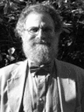

Tech Mesh London 2012

Philip Wadler, TweetProfessor of Theoretical Computer Science at the University of Edinburgh

Biography: Philip Wadler
Philip Wadler is Professor of Theoretical Computer Science at the University of Edinburgh. He is an ACM Fellow and a Fellow of the Royal Society of Edinburgh, the Chair of ACM SIGPLAN, and past holder of a Royal Society-Wolfson Research Merit Fellowship. Previously, he worked or studied at Stanford, Xerox Parc, CMU, Oxford, Chalmers, Glasgow, Bell Labs, and Avaya Labs, and visited as a guest professor in Copenhagen, Sydney, and Paris. He has an h-index of 59, appears at position 269 on Citeseer's list of most-cited authors in computer science, and has a total of more than 17,500 citations to his work according to Google Scholar. He is a winner of the POPL Most Influential Paper Award. He has contributed to the designs of Haskell, Java, and XQuery, and is a co-author of Introduction to Functional Programming (Prentice Hall, 1988), XQuery from the Experts (Addison Wesley, 2004) and Generics and Collections in Java (O'Reilly, 2006). He has delivered invited talks in locations ranging from Aizu to Zurich.
Presentation: TweetKeynote: Haskell: Practical as well as Cool
Time:
Tuesday 09:15 - 10:15
/
Location:
To be announced
You’ve probably heard about Haskell by now, but life is short, so why should you bother about yet another programming language? In this talk we’ll focus on three distinctive aspects of Haskell that you might make it worth the bother. First, purity: uncontrolled side effects are the bane of correctness, testing, and parallelism, and Haskell gets them under control. Second, types: going well beyond the sterile static/dynamic debate, Haskell is an amazing cauldron of new ideas in types, and we’ll tell you why that matters. Last, domain specific languages: we all need them and no language makes it easier to develop and morph a DSL than Haskell. We hope you’ll go away at least provoked and intrigued.
Presentation: TweetFaith, Evolution, and Programming Languages: from Haskell to Java
Faith and evolution provide complementary--and sometimes conflicting--models of the world, and they also can model the adoption of programming languages. Adherents of competing paradigms, such as functional and object-oriented programming, often appear motivated by faith. Families of related languages, such as C, C++, Java, and C#, may arise from pressures of evolution. As designers of languages, adoption rates provide us with scientific data, but the belief that elegant designs are better is a matter of faith. This talk traces one concept, second-order quantification, from its inception in the symbolic logic of Frege through to the generic features introduced in Java 5, touching on aspects of faith and evolution. The remarkable correspondence between natural deduction and functional programming informed the design of type classes in Haskell. Generics in Java evolved directly from Haskell type classes, and are designed to support evolution from legacy code to generic code. Links, a successor to Haskell aimed at AJAX-style three-tier web applications, aims to reconcile some of the conflict between dynamic and static approaches to typing.
Talk objectives: Offer a historical perspective on the development of programming languages, considering the roles of faith and evolution.
Target audience: Engineers interested in the evolution of Programming Languages